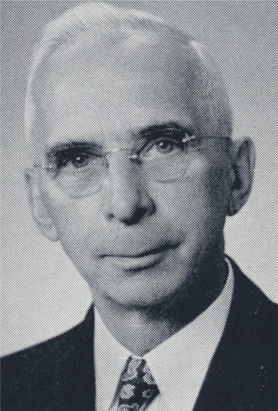

-1-MasterItem.svg)
Stories of Westminster United Church & its People / Page
63
and affairs body) committee structure touted Missionary, Room, Music, Gymnasium,
Pew. At first
glance the appearance of a simpler time. Not necessarily so. If the priorities
were different from ours
today, the work and activity was still there.
In 1914, Westminster’s first congregation-supported missionaries were appointed. Rev. and Mrs.
Duncan McRae started their mission in Shekel, South China. Miss Dorothy
Kilpatrick was appointed
our Sunday School missionary in Mhow, Central India. Not that different in
intent from MacKinnon’s
interest in having Sunday Schools remote from the Church building. The reach was
simply further
away. We felt the need to help people less fortunate than ourselves and tell
people about Jesus.
By 1929, under the leadership of people such as Mr. Robert Schofield (picture),
who was
Missionary Committee Convener at that time (later Clerk of Session), the
Congregation
had, in place, a Women’s Missionary Society, a Pitblado Young Women’s Missionary
Society, a President Dorothy Kilpatrick Mission Circle, and a Mission Band. We
cared
about people abroad, we raised money to support our missionaries and their work.
And the Sunday School had a “brown baby” fund which money was sent to Miss
Kilpatrick to buy gifts for her “brown babies” in India.
The period of David Christie’s ministry had a number of interesting moments:
•
June, 1916
/ The 47th General Assembly of the Presbyterian Church in Canada met
in Westminster Church.It was later called The Union Assembly. The question of
union between
Presbyterians, Methodists, and Congregationalists came to a vote and “ was agreed to by
a large majority of commissioners.” The Presbyterian Church was ready to move forward.
•
1918
/ 1) Annual Report: the congregation numbered 1310 people; 2) in 1917
contributions
from all sources placed Westminster fourth in Canada in the Presbyterian Church;
3) we were
paying Dr. Christie $4000/year; 4) the practice of District Visitors was already
established (26 in all):
Far Lying Districts: St. James-1, Norwood-1, north of CPR Tracks-1; Down
Town: bounded north
by the CPR tracks, and south by The Assiniboine; (Vaughn / Kennedy / Edmonton / Hargrave
/ Cumberland)-3; South of The Assiniboine (Osborne/Fleet/Stafford/Mulvey Area)-5,
Wolesley
Area-5, North of Portage/West of Osborne-5, South of Portage/East of
Sherbrook-5.
Table
of Contents
Rev. DAvid christie
